Prevenția și promovarea sănătății prin mișcare
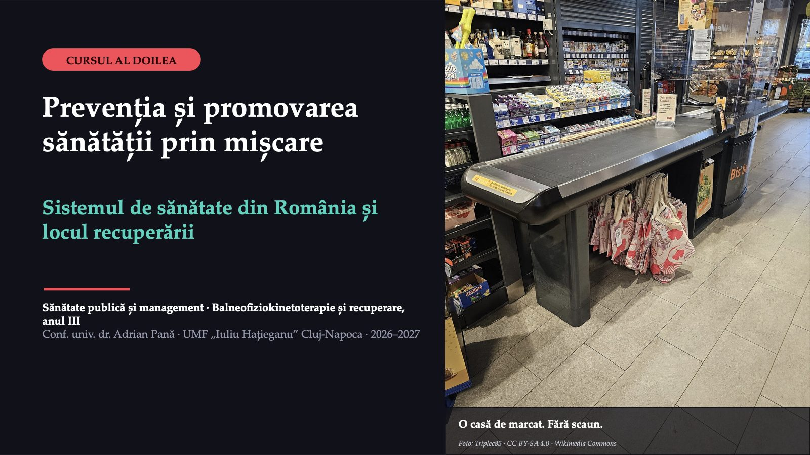
1 / 43Doi ani de durere, o casă de marcat fără scaun
![CAZUL ȘEDINȚEI · O REIA LUCRAREA PRACTICĂ DE DUPĂ CURS Doi ani de durere, o casă de marcat fără scaun PACIENTA A · cincizeci și doi de ani · operatoare de casă de marcat, ture lungi Durere lombară de doi ani, fără o cauză specifică; crește după statul prelungit în picioare. A renunțat la grupul de dansuri populare și evită mersul pe jos: se teme că mișcarea îi agravează durerea. Medicul de familie i-a recomandat recuperare. Ambulatoriul e în alt oraș, cu programul în timpul turelor ei. Caz construit în scop didactic; persoana nu există. Ce ați face pentru ea?](diapozitive/C02/002.jpg) 2 / 43
2 / 43„Firma nu are buget de scaune”
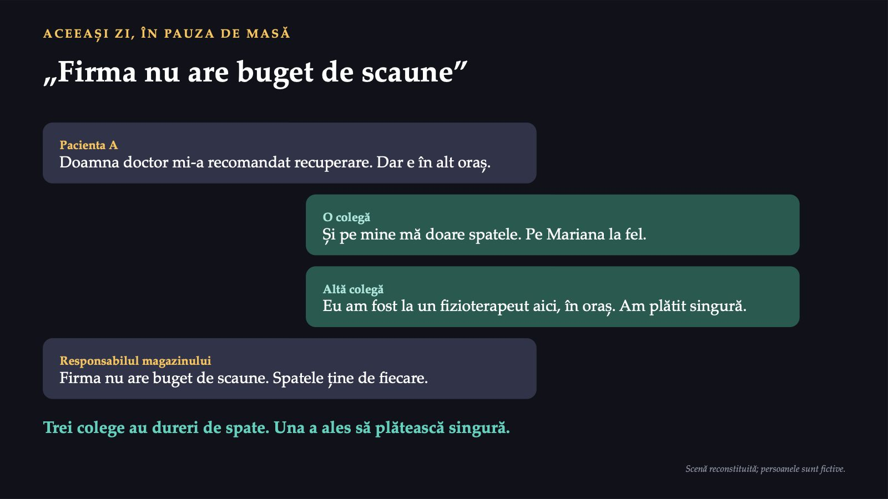
3 / 4360%
![CUM SUNTEȚI EVALUAȚI Două componente, ambele obligatorii 60% Test grilă: 20 de întrebări, un singur răspuns corect, 30 de minute La a patra întâlnire de lucrări practice. Suportul pentru test sunt aceste note de curs. 40% Portofoliul de lucrări practice: Fișele 1–4 Contează media celor mai bune trei fișe din patru. Condiție: minimum trei fișe predate. Lucrarea practică a doua produce Fișa 2. Promovarea: cel puțin 5 la test și cel puțin 5 la portofoliu. Voturile și discuțiile de azi nu se notează: vă arată ce trebuie recitit.](diapozitive/C02/004.jpg) 4 / 43
4 / 43Trei întrebări, un singur caz
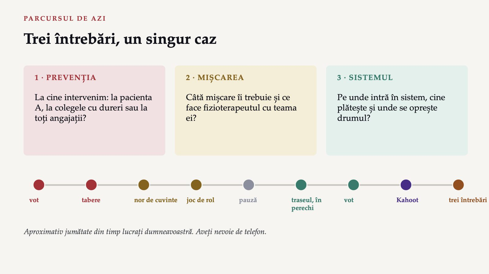
5 / 43Ce ar reduce cel mai mult, în următorii cinci ani, numărul angajaților magazinului care ajung în concediu medical din cauza durerii lombare?
 6 / 43
6 / 43Două întrebări care par una singură
![GEOFFREY ROSE · 1985 Două întrebări care par una singură De ce s-a îmbolnăvit această persoană și nu alta? Caută determinanții cazurilor individuale. De ce are o populație mai multe cazuri decât alta? Caută determinanții ratei de incidență. Dacă toate casierele stau ore în șir în picioare, fără scaun, comparația dintre cele cu dureri și cele fără dureri nu arată poziția de lucru ca factor de risc: toate o au. Arată, cel mult, cine e mai vulnerabil. O cauză la care sunt expuși toți nu se vede în studiile caz–martor și de cohortă. Rose G. Sick individuals and sick populations. Int J Epidemiol, 1985 (după rezumat). Exemplul magazinului este o ilustrare construită pentru curs.](diapozitive/C02/007.jpg) 7 / 43
7 / 43A proteja persoana sau a schimba condițiile
![DOUĂ STRATEGII DE PREVENȚIE A proteja persoana sau a schimba condițiile Strategia riscului înalt Protejează indivizii susceptibili: evaluare și exerciții pentru angajatele care au deja dureri. + Potrivită persoanei; subiect și medic motivați; resurse folosite eficient; raport beneficiu–risc favorabil (Rose, tabelul 1). − Paliativă și temporară, nu radicală; depistare costisitoare; potențial limitat: mulți oameni cu risc mic dau mai multe cazuri (Rose, tabelul 2). Strategia populațională Controlează cauzele incidenței: scaune, pauze active, mișcare pentru toți. + Deplasează întreaga distribuție a expunerii spre valori mai mici, nu doar coada ei (Rose). − Fiecare om câștigă puțin; de aceea schimbarea e greu acceptată.](diapozitive/C02/008.jpg) 8 / 43
8 / 43Răspunsul apare după ședință
Răspunsul apare după ședință
Răspunsul apare după ședință
Răspunsul apare după ședință
Riscul înalt sau populația?
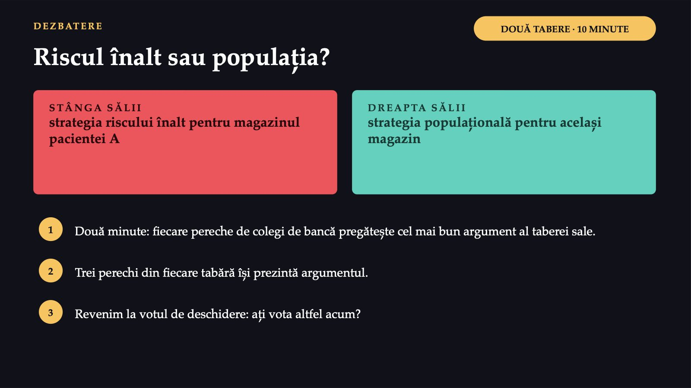
11 / 43A treia casieră din același magazin
![CE ÎNSEAMNĂ PENTRU FIZIOTERAPEUT A treia casieră din același magazin Rose: cele două abordări nu sunt, de obicei, în competiție, dar preocuparea prioritară trebuie să fie descoperirea și controlul cauzelor incidenței. Pregătirea clinică vă orientează spre riscul înalt. Perspectiva populațională adaugă o întrebare: ce condiții produc mereu pacienți noi cu aceeași problemă? Recomandare de ergonomie către angajator Program de mișcare pentru toți angajații Discuție cu medicul de medicina muncii Nu renunțați la tratamentul individual: îi adăugați o intervenție asupra cauzelor. Paradoxul prevenției: beneficiu mare pentru populație, mic pentru fiecare (Rose, tabelul 6). Sinteza Feigin 2020: strategiile populaționale sunt încă subutilizate.](diapozitive/C02/012.jpg) 12 / 43
12 / 43Orice mișcare care consumă energie
![Mers nordic pe o stradă din Polonia, 2019 Foto: WrS.tm.pl · CC0 · Wikimedia Commons PARTEA A DOUA · MIȘCAREA Orice mișcare care consumă energie TERMEN NOU Activitate fizică (OMS): orice mișcare a corpului produsă de mușchii scheletici care necesită consum de energie: în timpul liber, în deplasare, la muncă și în gospodărie. „Exercițiu fizic”, în vorbirea obișnuită: mișcarea făcută anume pentru condiția fizică. Sedentarismul (OMS): ≤ 1,5 MET, șezând, înclinat sau culcat; se pot atinge recomandările și totuși sta multe ore jos. Pacienta A stă rar jos. Dar statul prelungit în picioare nu este activitate fizică benefică pentru sănătate.](diapozitive/C02/013.jpg) 13 / 43
13 / 43150–300
![OMS · GHIDUL DIN 2020 Ce recomandă OMS adulților, în fiecare săptămână 150–300 de minute de activitate aerobă de intensitate moderată 75–150 de minute de intensitate viguroasă, ori o combinație echivalentă 2+ zile de întărire musculară, toate grupele mari, intensitate cel puțin moderată „Sau” între primele două, „plus” față de a treia. Pentru prima dată, ghidul se adresează explicit și persoanelor cu afecțiuni cronice sau cu dizabilitate: pacienții dumneavoastră nu mai sunt o excepție de la recomandări. Bull FC și colab. WHO 2020 guidelines on physical activity and sedentary behaviour. Br J Sports Med, 2020.](diapozitive/C02/014.jpg) 14 / 43
14 / 43Vârstnicii, bolile cronice și statul nemișcat
![OMS · GHIDUL DIN 2020 Vârstnicii, bolile cronice și statul nemișcat Vârstnicii: în 3 sau mai multe zile, activitate multicomponentă, cu accent pe echilibru și forță, pentru capacitatea funcțională și prevenirea căderilor. OMS numără fractura de șold între leziunile moderate sau grave după cădere. Afecțiuni cronice și dizabilitate: activi pe măsura posibilităților, cu sfatul unui profesionist. Fără contraindicații, avizul medical nu e, în general, necesar dacă se începe cu puțin și se crește treptat. Comportamentul sedentar: de limitat. Înlocuirea statului nemișcat cu mișcare de orice intensitate, inclusiv ușoară, aduce beneficii. Primul pas nu e programul complet.](diapozitive/C02/015.jpg) 15 / 43
15 / 43100 din 150
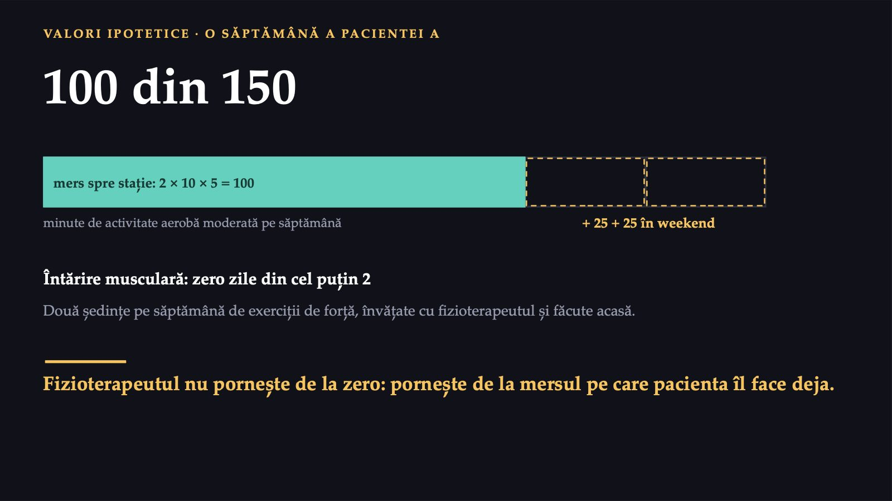
16 / 43Câte minute de activitate aerobă moderată sau viguroasă ați făcut în ultimele șapte zile, în afara orelor de practică?
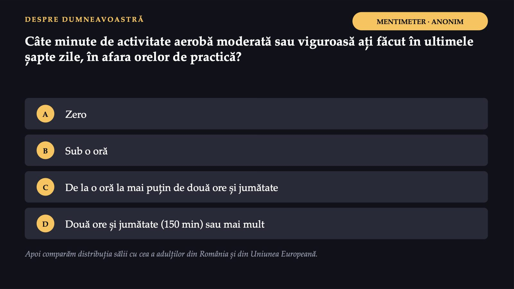
17 / 43Mișcarea aleasă lipsește la majoritatea adulților
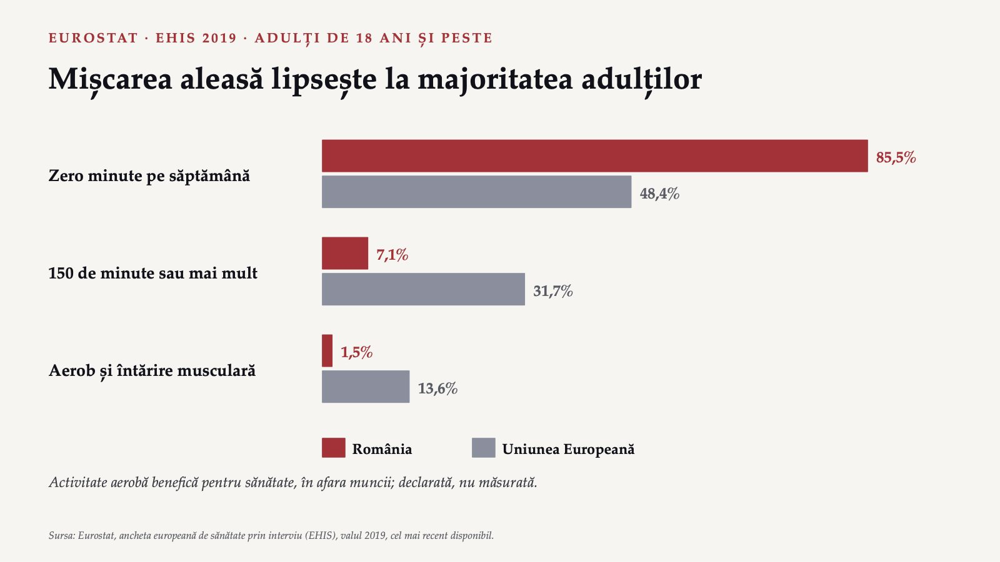
18 / 4331%
![OMS · LUMEA 31% dintre adulți (2022), adică 1,8 miliarde de oameni, nu ating 150 de minute de activitate moderată pe săptămână +5 puncte procentuale între 2010 și 2022 35% în 2030 dacă tendința continuă 80% dintre adolescenți nu ating nivelurile recomandate (fișa OMS, fără an) Înapoi la România: indicatorul european exclude munca. O parte dintre adulții din România pot avea munci fizice, iar mișcarea lor nu intră în cifra de 85,5%. Datele sunt din 2019; evoluția de după pandemie nu se cunoaște din această sursă. Sursa: OMS, fișa „Physical activity”; Eurostat, EHIS 2019.](diapozitive/C02/019.jpg) 19 / 43
19 / 43Ce vă împiedică să vă mișcați mai mult?
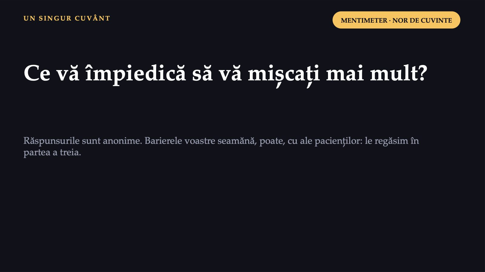
20 / 43Același ghid, trei traduceri
![CE ÎNSEAMNĂ PENTRU FIZIOTERAPEUT Același ghid, trei traduceri Adult sănătos O țintă. Recomandările se aplică așa cum sunt scrise. Pacienta A, lombalgie cronică O direcție. Drumul trece prin teama de mișcare, prin durere și prin programul de lucru. Vârstnic după fractură de șold O prioritate. Echilibrul și forța vin întâi: previn următoarea cădere. Lucrarea practică a doua cere exact această traducere: o intervenție pentru un grup populațional definit, cu obiective măsurabile, construită pe ghidul OMS din 2020.](diapozitive/C02/021.jpg) 21 / 43
21 / 43dezvoltarea
![FIZIOTERAPEUTUL ÎN PREVENȚIE · CE SPUNE LEGEA LEGEA nr. 229/2016 privind organizarea și exercitarea profesiei de fizioterapeut Art. 3 (rezumat). Servicii conexe actului medical, pentru dezvoltarea, menținerea și restabilirea capacității de mișcare și a abilității funcționale, pe toată perioada vieții. Art. 4 și 13. Activitățile se aplică sub prescripția medicului specialist, pe baza diagnosticului clinic. Art. 17. a) domeniul administrativ (managementul serviciilor de fizioterapie). b) Domeniul clinic: „la nivelul îngrijirilor conexe actului medical, respectiv primare, secundare și terțiare”. Cele trei sunt niveluri de asistență, nu de prevenție. c) Sănătatea publică sau comunitară. „cu rol direct în promovarea sănătății și formularea politicilor de promovare a activităților specifice de fizioterapie la nivel de individ/grupuri”. dezvoltarea → promovarea sănătății menținerea → prevenția restabilirea → recuperarea Profesia nu începe la pacientul deja bolnav și include lucrul cu grupuri. Legea nr. 229/2016, art. 3, 4, 13 și 17; ghilimelele redau textul legii, restul e rezumat. lectura cursului (nu formulare a legii):](diapozitive/C02/022.jpg) 22 / 43
22 / 43Înainte de boală
![Aparate de exerciții într-un parc public, Anglia, 2021 Foto: Rodhullandemu · CC BY-SA 4.0 · Wikimedia Commons PREVENȚIA PRIMARĂ Înainte de boală Persoane fără o afecțiune, dar cu factori de risc. În magazin: un program de mișcare și de ergonomie pentru toți angajații, adică strategia populațională a lui Rose. La vârstnici: programe de echilibru și de forță, ca în recomandarea OMS pentru prevenirea căderilor. Factorii de risc ai căderilor, după OMS: inactivitatea fizică, pierderea echilibrului, mediul nesigur. Primii doi se schimbă prin exercițiu, al treilea prin adaptarea locuinței. Asistența profilactică: sub prescripția medicului specialist (art. 13). Munca cu grupuri: domeniul de sănătate publică (art. 17 lit. c).](diapozitive/C02/023.jpg) 23 / 43
23 / 43După boală: tratamentul care previne recăderea
![Sală de kinetoterapie într-o clinică privată, 2022 Foto: Hilahalumit · CC BY-SA 4.0 · Wikimedia Commons PREVENȚIA TERȚIARĂ După boală: tratamentul care previne recăderea OMS, pentru lombalgia nespecifică: terapii fizice pentru forță și mobilitate, care ajută la reluarea activității fizice sprijin psihologic și social; mai puțină solicitare în munca fizică schimbarea stilului de viață, inclusiv mai multă activitate fizică La pacienta A, tratamentul și prevenția recăderii se suprapun. Rămâne o barieră pe care niciun program de exerciții nu o rezolvă singur: teama.](diapozitive/C02/024.jpg) 24 / 43
24 / 43„Nu vreau să-mi stric spatele de tot”
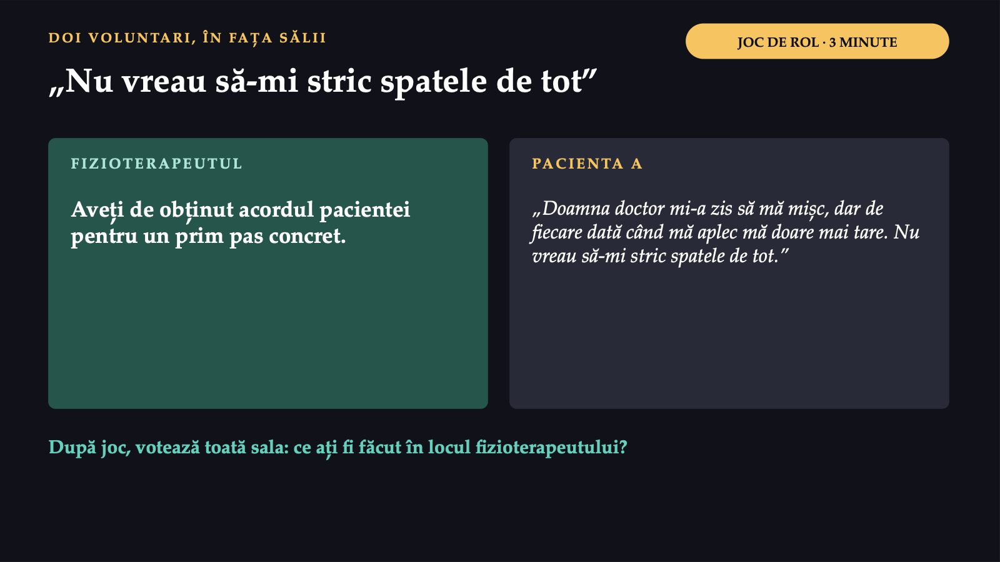
25 / 43Ce ați fi făcut în locul fizioterapeutului?
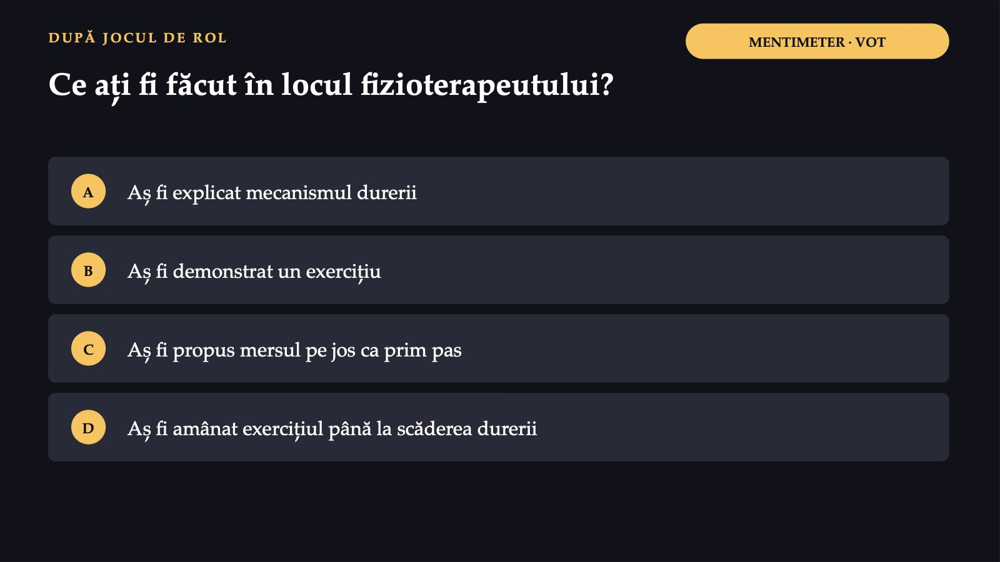
26 / 43Răspunsul apare după ședință
Răspunsul apare după ședință
Pauză
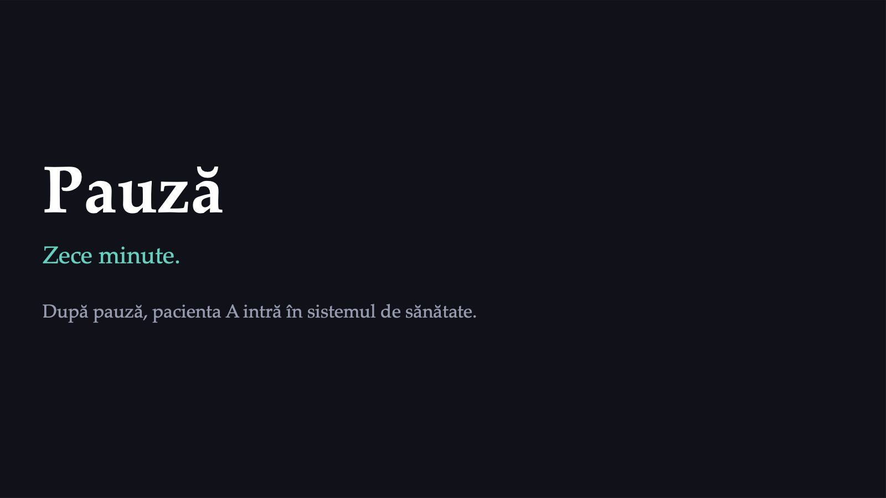
28 / 43Sistemul de sănătate e mai mare decât spitalul
![PARTEA A TREIA · SISTEMUL Sistemul de sănătate e mai mare decât spitalul OMS: toate organizațiile, persoanele și acțiunile al căror scop principal este să promoveze, să restabilească sau să mențină sănătatea. Și cabinetul privat al colegei face parte din el. Furnizarea serviciilor ambulatorii, secții, sanatorii, domiciliu Forța de muncă fizioterapeuți, medici de recuperare, terapeuți ocupaționali, logopezi Informația date despre nevoia de recuperare și funcționare; rezoluția WHA76.6 îndeamnă statele să le adune cu CIF Produse și tehnologii dispozitive de mers, orteze, echipamente Finanțarea asigurări de sănătate și plăți directe Conducerea legi, autorizarea furnizorilor, profesiile Când pacienta A nu ajunge la recuperare, cauza poate sta în oricare dintre cele șase. OMS, „Everybody’s business”, 2007: cadrul celor șase componente, și azi un reper (Sacks și colab., 2018).](diapozitive/C02/029.jpg) 29 / 43
29 / 43Recuperarea traversează nivelurile
![CONTRACTUL-CADRU · NIVELURILE DE ASISTENȚĂ Recuperarea traversează nivelurile Cap. I Asistența primară punctul de intrare; trimiterea Cap. II Ambulatoriul de specialitate clinic evaluarea și planul de proceduri Cap. III Medicina fizică și de reabilitare în ambulatoriu seriile de proceduri, cu fizioterapeut Cap. VI Unitățile sanitare cu paturi recuperarea în internare Cap. VIII Îngrijirile la domiciliu pacientul care nu se poate deplasa Cap. X Sanatoriile și preventoriile inclusiv cele balneare Cap. XII Dispozitivele medicale pentru recuperarea deficiențelor Recuperarea nu e un nivel separat de asistență: le traversează pe cele existente. Contractul-cadru, anexa la HG nr. 521/2023, modificat prin HG nr. 5/2026; forma consolidată din 16.01.2026.](diapozitive/C02/030.jpg) 30 / 43
30 / 43De la medicul de familie la sala de proceduri
![TRASEUL PACIENTEI A De la medicul de familie la sala de proceduri Sală de proceduri de fizioterapie într-o clinică din Karelia, Rusia Foto: Igor Georgievskiy · CC BY-SA 4.0 · Wikimedia Commons 1 Medicul de familie întocmește biletul de trimitere (art. 7 lit. t) 2 Medicul de medicină fizică și de reabilitare evaluează și face planul: cel mult 4 proceduri (art. 26 lit. y) 3 Furnizorul în contract cu casa un furnizor din ambulatoriu nu poate contracta fără fizioterapeut (art. 41 alin. 3) Unde se oprește: distanța, timpul (programul coincide cu turele), costul. Colega le-a ocolit la cabinetul privat, dar a plătit.](diapozitive/C02/031.jpg) 31 / 43
31 / 43O parte plătește casa, o parte plătește pacientul
![Băile Felix, Bihor: complexul de băi Apollo Foto: ArnoldPlaton · CC BY-SA 3.0 · Wikimedia Commons SANATORIILE ȘI TRATAMENTUL BALNEAR O parte plătește casa, o parte plătește pacientul Art. 145 alin. (2) și (3): serviciile din sanatorii, inclusiv balneare, se plătesc prin tariful pe zi de spitalizare. La sanatoriile balneare, sumele contractate de casă scad cu contribuția asiguraților, după tipul de asistență și durata tratamentului. Pentru balneofiziokinetoterapie, acesta e unul dintre locurile de muncă tipice ale absolvenților. Legea nr. 229/2016, art. 15: fizioterapeutul lucrează și cu bazele de tratament din sistemul balnear.](diapozitive/C02/032.jpg) 32 / 43
32 / 43Desenați drumul pacientului vostru
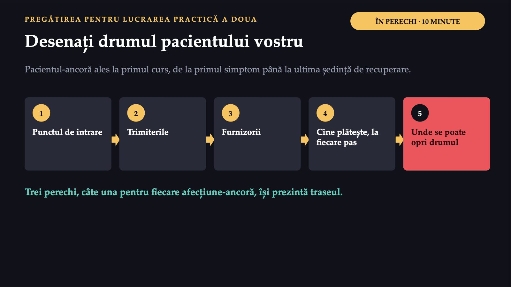
33 / 43Mai puțini bani, o parte mai mare din buzunar
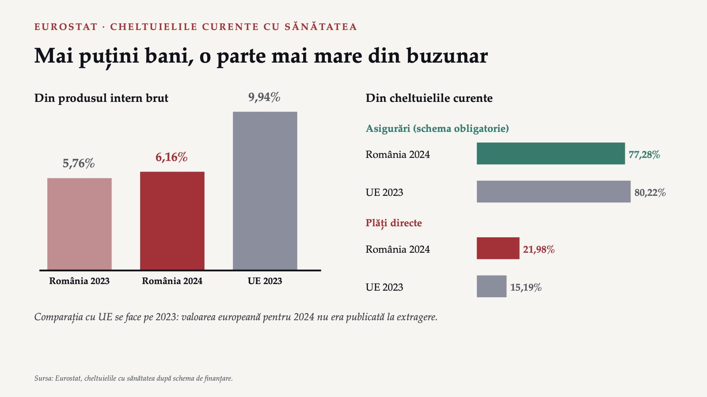
34 / 4321,98%
![ROMÂNIA · 2024 21,98% din cheltuielile curente cu sănătatea au fost plătite direct de gospodării (22,96% în 2023; UE: 15,19% în 2023). TERMEN NOU Plăți directe: sumele plătite de gospodării din resursele proprii pentru servicii și produse de sănătate. O plată directă cântărește mai greu într-o gospodărie cu venit mic. Cu cât se plătește mai mult direct, cu atât accesul depinde mai mult de venit. Datele nu arată cât din această sumă merge la recuperare. Sursa: Eurostat, schema de finanțare HF3, plățile directe ale gospodăriilor.](diapozitive/C02/035.jpg) 35 / 43
35 / 43Coplata e mică. Drumul costă mai mult
![CONTRACTUL-CADRU, ART. 51 · EXEMPLUL: VALORI IPOTETICE Coplata e mică. Drumul costă mai mult Coplata pe serie de proceduri în ambulatoriu: între 5 și 10 lei, stabilită de furnizor; scutirile, după art. 225 din Legea nr. 95/2006. Pacienta A, o serie de zece ședințe, în alt oraș transport: 30 de lei pe zi × 10 zile = 300 de lei + ture schimbate sau zile neplătite coplata: 10 din 310 lei, aproximativ 3% Colega a plătit mai mult pe ședință la cabinetul privat, dar fără drum și fără zile pierdute: o alegere economică, nu numai medicală.](diapozitive/C02/036.jpg) 36 / 43
36 / 43Trei pacienți, trei bariere
![Un sat din județul Brașov Foto: Whitepixels · CC0 · Wikimedia Commons ECHITATEA ACCESULUI Trei pacienți, trei bariere Pacienta A: timpul și distanța: serviciul e în alt oraș, în timpul turelor. Pacientul B: după un accident vascular cerebral, la etajul al treilea, fără lift: mediul fizic. Pacienta C: după o fractură de șold, singură într-un sat fără cabinet; pensia acoperă greu drumul: geografia, banii, vârsta. TERMEN NOU Echitate în sănătate (OMS, 2021): absența diferențelor nedrepte, evitabile sau remediabile în starea de sănătate dintre grupuri de populație.](diapozitive/C02/037.jpg) 37 / 43
37 / 43Persoanele cu limitări severe, cu nevoie mai mare de recuperare, declară cel mai des examinări nefăcute
![EUROSTAT · EU-SILC 2025 · 16 ANI ȘI PESTE Persoanele cu limitări severe, cu nevoie mai mare de recuperare, declară cel mai des examinări nefăcute România, limitări severe 15,5% UE, limitări severe 6,2% România, total 2,9% UE, total 2,3% România, fără limitări 1,3% Rural 3,4% · orașe mari 2,3% (UE: 2,7% și 2,4%) Nevoie de examinare medicală nesatisfăcută din cauza costului, a distanței sau a listei de așteptare. Privește examinarea medicală, nu recuperarea; e declarată. Sursa: Eurostat, EU-SILC 2025; valorile României din 2024 au ruptură de serie și nu se folosesc.](diapozitive/C02/038.jpg) 38 / 43
38 / 43Care barieră a pacientei C poate fi redusă cel mai direct de un fizioterapeut, fără schimbarea regulilor de finanțare?
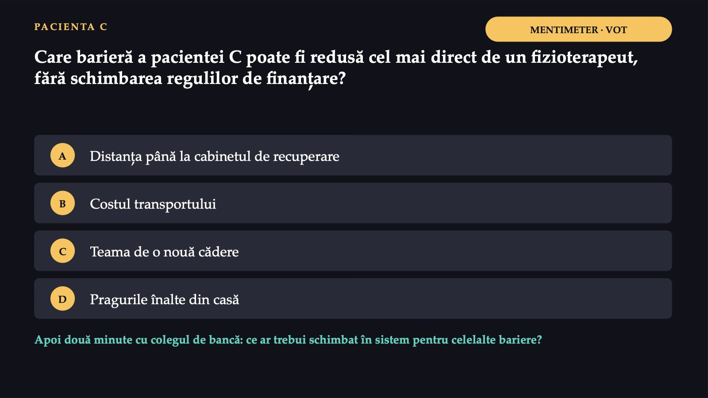
39 / 43Răspunsul apare după ședință
Răspunsul apare după ședință
Ce faceți diferit, de luni dimineață
![ÎN PRACTICĂ Ce faceți diferit, de luni dimineață 1 Al treilea pacient cu aceeași problemă, din același loc de muncă: ce condiție comună produce cazurile și cine o poate schimba? 2 Recomandați mișcare pornind de la ce face deja pacientul și de la teama lui. Ghidul e direcția, nu primul pas. 3 Un pacient întrerupe programul: întrebați-l despre drum, program și cost înainte să presupuneți lipsa de motivație. 4 Păstrați același pacient-ancoră: la lucrarea practică de azi îl descrieți, la a doua îi desenați drumul prin sistem.](diapozitive/C02/041.jpg) 41 / 43
41 / 43Prevenție, mișcare, sistem: ce a rămas
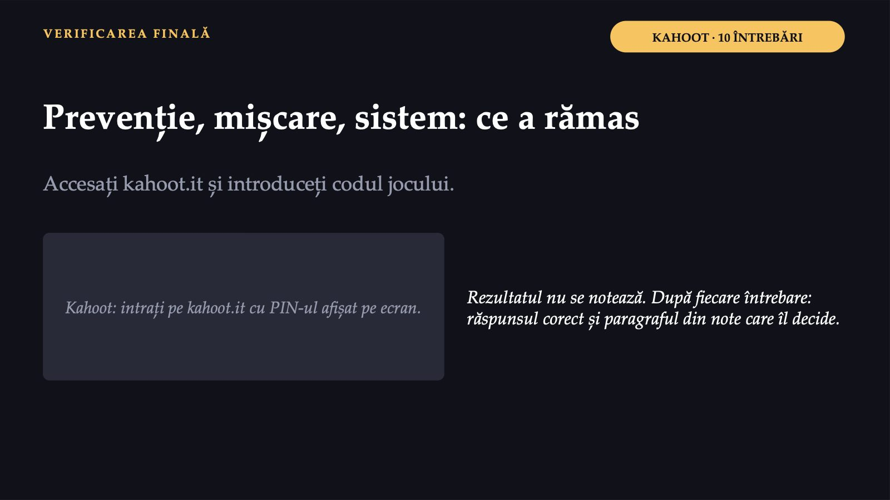
42 / 43Trei întrebări pentru titular
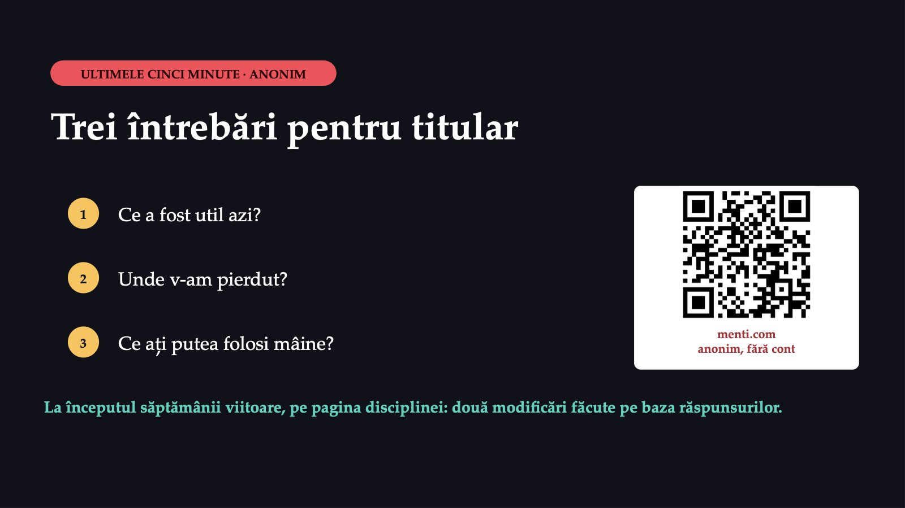
43 / 43Săgeți sau spațiu: navigare · O: vedere de ansamblu · N: notele prezentatorului · F: ecran complet · Esc: închidere